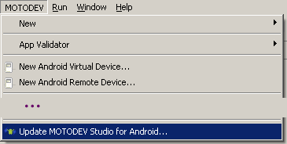
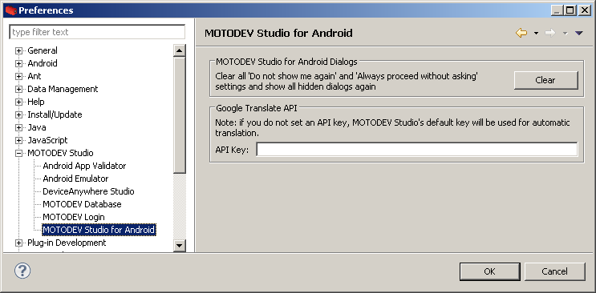

NOTE: This blog post was originally hosted on Motorola's MOTODEV web site. That site was decommissioned in 2012. I've made every attempt to preserve blog posts and accompanying forum posts with their original content. Many web links are no longer valid, so they have been removed and replaced with emphasized text.
by Eric Cloninger (EricC)
Hello MOTODEV Studio users,
A new version of MOTODEV Studio for Android became available on June 15, 2011. This update includes version 11 of the Google ADT plugins, which had some API changes that affected MOTODEV Studio. It also adds support for new Google Translate API policies that affect the Localization Files Editor.
A longer description of the update and how to install it is available on the MOTODEV discussion boards at http://community.developer.motorola.com/t5/MOTODEV-Studio-for-Android/Announcing-MOTODEV-Studio-upda...
Thank you for using MOTODEV Studio for Android.?
Eric
Hello everyone!
I'm pleased to announce that MOTODEV Studio 2.2.1 is available now. This update has the ADT plugins version r11 that were released last week. It also has a change to work with the changes to the Google Translate API that were announced 2 weeks ago.
Update Process
You can update MOTODEV Studio with "MOTODEV->Update MOTODEV Studio for Android". This will update over the Internet by going directly to the MOTODEV update site. Unlike the previous versions of MOTODEV Studio, which went to a combination of update sites at Motorola, Google, and Eclipse.org.

You can also download the Helios update package from our downloads site and manually apply the update as a local archive. Finally, you could download the full installer for version 2.2.1. All three methods will get you to the same point.
We put a good deal of effort into improving the update experience in Studio 2.2.0, so you should see some performance increases over previous updates, but there could be some problems. If you run into problems or are connecting from outside North America, you may find it easier to use the full Helios update package.
If you choose to use "Help->Check for Updates", be aware that we've been having problems for weeks communicating with the eclipse.org servers. It may take 2 or 3 repeated attempts to get all the packages downloaded. This is an Eclipse issue and not unique to MOTODEV Studio. This is why we suggest getting the update package for Helios and manually applying it to your installation.
Once you've updated the MOTODEV Studio components, you might want to go to the Android SDK and AVD manager and make sure you have the latest SDK tools. It's not a requirement, but it's always a good practice.
If you have problems with the installer or update, please post to this thread. It would help to know what OS you are running and any details about the messages you are seeing.
Google Translate changes
Google announced they were deprecating the Google Translate APIs later this year and were putting in policy changes effective immediately. While the details of the change weren't provided, we performed some tests to see how it would impact MOTODEV Studio users. We found that the service cuts out after a few hundred thousand characters and doesn't reset for several hours. It appears that this behavior is tied to the Google API Key that is associated with the request.
If you make use of the automated translation feature of MOTODEV Studio, you will want to apply for your own API key at this link. The key that we embed into MOTODEV Studio is shared by all users, so depending on how many other developers use the feature in the same day, you may find that the feature doesn't work for you. By using your own API key, you ensure that only your requests are counted against your daily limit.
To enter your own key, go to "Preferences->MOTODEV Studio for Android". If you don't provide your own key, you run the risk of getting an error message when you submit your strings for translation.

We will continue to monitor the changes to this API and see how we can adapt the tools to work. Google claims this was the result of "substantial economic burden caused by ?extensive abuse?" (sic). A few days later, Google announced they were looking at ways for developers to continue using the APIs as a paid service. This will almost certainly be tied to an API key, so if you find value in this feature and Google's results, you will want your own key. We are also investigating APIs and services from other vendors?, so stay tuned.
ADT 12?
The only changes for this release are the ones mentioned above. We are already seeing ADT 12 code checked into the sdk tools repo at kernel.org. When Xavier from the Android tools team announces there is a new branch, this is usually a sign that a new ADT will be released within a month. We saw that message last Friday. So, it's safe to say that there will probably be another ADT installation soon, but we're hoping it won't require another MOTODEV Studio update. So long as there are no API changes inside the ADT plugins, MOTODEV Studio will work by just updating that one component. We will keep you informed as new developments occur.
Thank you for using MOTODEV Studio.
-E